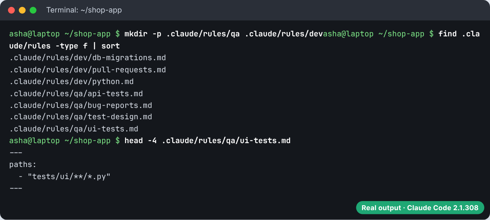
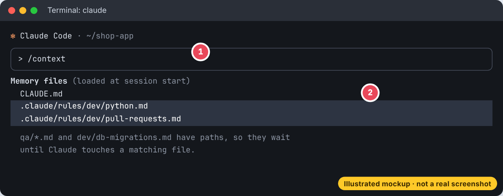

Why there is no rules.md, how to build a .claude/rules/ folder step by step, path rules that load only for matching files, ready to copy rules for code, content and contracts, a screenshot guide, rule files for a QA engineer and for a developer, personal and shared rules, and how to choose between rules, CLAUDE.md, skills and hooks.
Rules are small notes for Claude, one topic per note, kept in a folder. Some notes are always read. Others are read only when Claude opens certain files.
Many guides and videos talk about a "rules.md" file. Claude Code does not read a file with that name. What it does have is a folder of rule files:
rules.md at the project root does nothing on its own..claude/rules/*.md in the project and ~/.claude/rules/*.md for you. Any number of Markdown files, one topic each..cursorrules file. Those are not read by Claude Code either. To reuse one, copy its contents into a file in .claude/rules/ or import it from CLAUDE.md with @..claude/rules/.testing.md or security.md.CLAUDE.md.paths list at the top so the rule loads only for matching files./context to see which rules loaded.your-project/
├── CLAUDE.md <- short: commands and the big picture
└── .claude/
└── rules/
├── code-style.md <- no paths: loads every session
├── security.md <- no paths: loads every session
├── testing.md <- paths: tests only
├── backend/
│ └── api.md <- paths: app/api only
└── content/
└── blog.md <- paths: blog posts onlyClaude Code finds every .md file in .claude/rules/, including subfolders like backend/. A rule without paths loads at launch with the same priority as .claude/CLAUDE.md.
# Code style - Type hints on every function. `mypy --strict` must pass. - Name files in snake_case: `order_summary.py`. - Prefer small pure functions. Keep side effects at the edges.
Add YAML front matter with a paths list. The rule then loads only when Claude reads, writes or edits a file that matches one of the patterns. paths is the only field rules use. Any other field is ignored.
--- paths: - "app/api/**/*.py" --- # API rules - Validate every request body with the Pydantic models in `app/api/schemas/`. - Errors use the shape `{ error: { code, message } }` with a 4xx or 5xx status. - Every new endpoint gets an entry in `docs/openapi.yaml`.
| Pattern | Matches |
|---|---|
**/*.py | every Python file, in any folder |
app/**/* | everything under app/ |
*.md | Markdown files in the project root only |
app/**/*.{py,pyi} | both .py and .pyi under app/ |
You can write paths as a list, or as one comma separated string.
| What Claude is doing | Rules loaded |
|---|---|
| Session starts | code-style.md, security.md (no paths) |
Edits app/api/orders.py | also backend/api.md |
Edits tests/test_cart.py | also testing.md |
Edits README.md | nothing new |
Edits content/blog/diwali-sale.md | also content/blog.md |
Rules are not only for code. Any team that keeps files in a folder can use them.
--- paths: - "tests/**/test_*.py" - "app/**/test_*.py" --- # Testing rules - Use pytest. One test file per module, plain English test names. - No real network calls. Use the fakes in `tests/fakes/`. - Run only the changed file: `pytest <file> -q`.
--- paths: - "content/**/*.md" --- # Blog writing rules - Title under 60 characters. One H1 only. - Every post ends with a call to action linking to /shop. - Prices in rupees as "Rs 499", never "INR 499".
--- paths: "contracts/**/*.docx, contracts/**/*.pdf" --- # Contract review rules - Flag any clause with unlimited liability or auto renewal longer than 12 months. - Quote the exact clause number for every point you raise. - Our standard payment term is 30 days. Flag anything longer.
paths.paths that match that area.This is the real setup of the rule files from the next two parts, in a small Python shop app. Both pictures are real terminal output.
Create .claude/rules/qa/ and .claude/rules/dev/, then save each rule file from the next two parts. find lists all seven. head shows the paths block at the very top of a path rule.

Run claude in the project, then /context. Rules without paths show in the memory files list right away. A path rule appears once Claude touches a matching file.

tests/test_pricing.py.tests/**/*.py, so qa/test-design.md joins the context.test_free_delivery_starts_at_499.Testers repeat the same team standards in every chat: our ID format, no time.sleep, check the status code first. Put each standard in a rule with paths, and it appears exactly when Claude works on that kind of file.
shop-app/ ├── CLAUDE.md ├── .claude/rules/ │ ├── qa/ │ │ ├── test-design.md <- paths: tests/**/*.py, testcases/**/*.md │ │ ├── api-tests.md <- paths: tests/api/**/*.py │ │ ├── ui-tests.md <- paths: tests/ui/**/*.py │ │ └── bug-reports.md <- paths: bugs/**/*.md │ └── dev/ │ ├── python.md <- no paths: every session │ ├── db-migrations.md <- paths: migrations/**, app/models/** │ └── pull-requests.md <- no paths: every session ├── app/ migrations/ bugs/ testcases/ └── tests/ api/ ui/ smoke/
--- paths: - "tests/**/*.py" - "testcases/**/*.md" --- # How we design tests - Every test case has an ID like TC-CART-001, a title, steps, test data and one expected result. - Cover three kinds for each rule: a positive case, a negative case and the boundary values. - For a limit like "1 to 10 items", test 0, 1, 2, 9, 10 and 11. - One behaviour per test. If the title needs the word "and", split it. - Test names read like sentences: test_free_delivery_starts_at_499.
--- paths: - "tests/api/**/*.py" --- # API test rules - Use the `api` fixture from tests/api/conftest.py. Never build URLs or tokens by hand. - Check the status code, then the JSON shape, then the values. In that order. - Every error test checks the body has the shape {"error": {"code", "message"}}. - No real payment gateway calls. Use the sandbox base URL from the API_BASE_URL variable. - Mark slow tests with @pytest.mark.slow so the PR pipeline can skip them.
--- paths: - "tests/ui/**/*.py" --- # UI test rules (Playwright for Python) - Find elements the way a user would: page.get_by_role, get_by_label, get_by_text. - Use CSS selectors only when nothing else works, and never XPath. - Never use time.sleep. Use expect(...) which waits by itself. - Page actions live in page objects in tests/ui/pages/. Tests only call those. - Each test logs in through the `logged_in_page` fixture, not through the login form.
--- paths: - "bugs/**/*.md" --- # Bug report rules - Title: what is broken, where, and when. "Coupon SAVE10 not applied on cart above Rs 2,000". - Steps start from a clean state and are numbered. Anyone must be able to repeat them. - Write Expected and Actual as two separate lines. - Severity is about impact (Critical, Major, Minor). Priority is about urgency (P1 to P3). - Never guess the cause. Put guesses under "Notes" and say they are guesses.
| QA task today | File Claude touches | Rules that load |
|---|---|---|
| Write test cases for a story | testcases/SHOP-142.md | test-design.md |
| Automate a checkout API test | tests/api/test_checkout_api.py | test-design.md, api-tests.md |
| Fix a flaky login UI test | tests/ui/test_login.py | test-design.md, ui-tests.md |
| Log a bug | bugs/coupon-not-applied.md | bug-reports.md |
ui-tests.md loads for tests/ui/, Claude replaces time.sleep(3) with expect(page.get_by_role("button", name="Pay")).to_be_enabled(), which waits only as long as needed, and the test stops flaking.Developers need two kinds of rules: a few that apply to all code, and some that matter only in risky places such as database migrations.
# Python rules for this repo - Python 3.12. Type hints on every function. `ruff check` and `mypy` must pass. - Raise our own errors from app/errors.py, never a bare Exception. - Log with `logger = logging.getLogger(__name__)`. Never print(). - New code needs a test in the matching file under tests/.
--- paths: - "migrations/**/*.py" - "app/models/**/*.py" --- # Database changes - Every model change gets a new Alembic migration: `alembic revision --autogenerate -m "..."`. - Never edit a migration that is already on main. Write a new one. - Every upgrade() has a working downgrade(). - Adding a NOT NULL column to a big table: add it nullable, backfill, then add the constraint.
# Pull requests - One change per PR. Under 400 changed lines where possible. - The description says what changed, why, and how it was tested. - Link the issue with "Fixes #123". - Run `pytest -q` and `ruff check .` before saying a change is done.
| Developer task today | File Claude touches | Rules that load |
|---|---|---|
| Any task | (session start) | python.md, pull-requests.md |
Add a gst_number column to orders | app/models/order.py | also db-migrations.md |
| Fix a pricing bug | app/cart/pricing.py | nothing new |
| Add a test for it | tests/test_pricing.py | also qa/test-design.md |
Rules in your home folder apply to every project on your machine. They load before project rules. Neither overrides the other, so if they disagree Claude may follow either. Keep them consistent.
~/.claude/rules/ ├── preferences.md # "Answer with the command first, then one line of explanation" └── git.md # "Never force push. Explain any rebase before running it."
| You want... | Use | Loads |
|---|---|---|
| a few facts for every session | CLAUDE.md | every session |
| a topic kept in its own file, for everyone | rule without paths | every session |
| guidance only for certain files | rule with paths | when a matching file is touched |
| a multi step procedure, run sometimes | skill | description always, steps when used |
| something that must never happen | hook or permission rule | runs as code, outside Claude |
/compact summarises it away with everything else. It loads again the next time Claude touches a matching file. If a rule must survive compaction, remove its paths or move it to the root CLAUDE.md./context # rules that loaded appear in the memory files list /memory # open and edit rule files claude --debug # shows a YAML parse error if a rule's frontmatter is broken
A rule whose frontmatter does not parse is loaded as if it had no paths, so it loads every session. --debug shows why.
*.md matches only the root folder. Use **/*.md for every folder.---. Then the rule loads as if it had no paths./doctor prompt-audit.📖 Every file name, folder, setting and command on this page was checked against the official Claude and Claude Code documentation in October 2026.